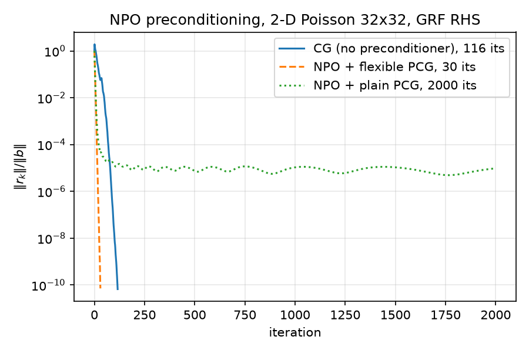
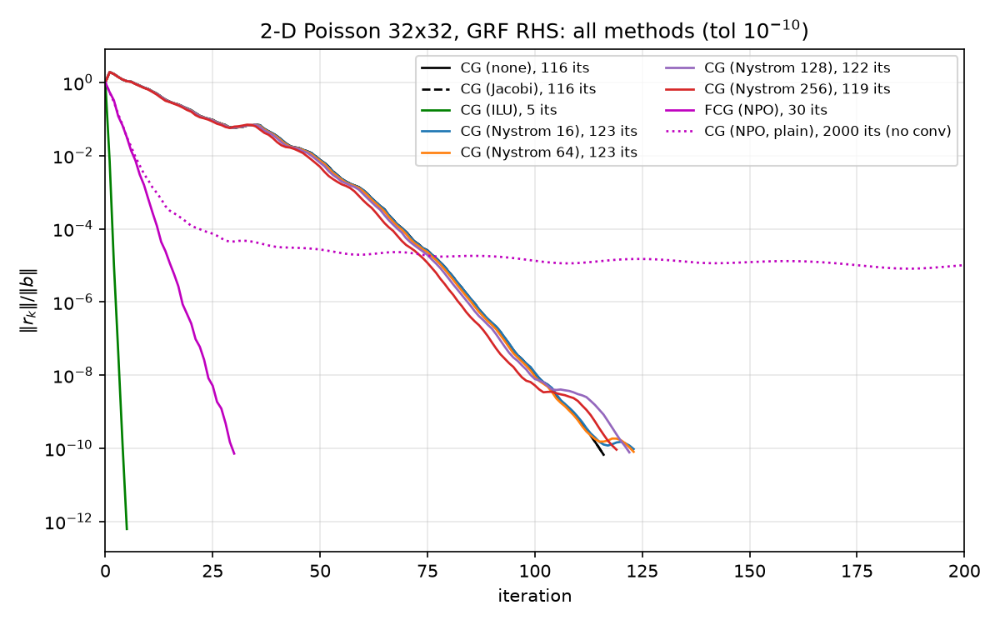
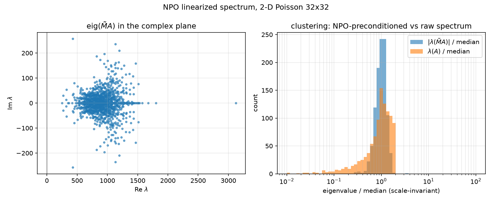

Part of the report suite (00–15; full index in 00-overview.md): 01-code-walkthrough.md · 02-eigenvalues.md · 03-gaussian-random-fields.md · 04-krylov-and-pcg.md · 05-classical-preconditioners.md · 06-neural-preconditioner.md · 07-nystrom-preconditioning.md · 08-results.md · 09-stiffness-as-precision.md · 10-fluctuation-dissipation.md · 11-regressions-and-multiscale.md · 12-autoregressive-preconditioning.md · 13-preconditioning-as-decoupling.md · 14-hierarchical-inverse.md · 15-preconditioning-as-prediction.md
This report covers two things:
Headline numbers from our runs (all from results/results.json and results/npo_eval.json, canonical problem poisson_2d(32), b = grf_rhs(32, alpha=2, tau=3, seed=42), tol $10^{-10}$):
| solver | iterations | final relres | relerr vs spsolve |
converged |
|---|---|---|---|---|
| CG (no preconditioner) | 116 | 6.667e-11 | 5.40e-12 | yes |
| NPO + flexible PCG (Notay) | 30 | 7.162e-11 | 3.10e-11 | yes |
| NPO + plain PCG (Fletcher–Reeves) | 2000 (cap) | 9.653e-06 | 6.65e-06 | no — stalls near $10^{-5}$ |
Speedup in iterations: $116/30 = 3.87\times$ (speedup_fcg_vs_cg = 3.8667 in npo_eval.json). The paper's own 32×32 Poisson result is 34 GMRES iterations vs 113 for the Jacobi baseline — a $3.3\times$ ratio — so the toy reproduces the paper's iteration economics at this scale almost exactly.
The target is the workhorse of implicit PDE solvers: repeatedly solving sparse SPD systems
$$A x = b, \qquad A \in \mathbb{R}^{N \times N} \text{ SPD (discretized elliptic operator)},$$
with a Krylov method. The paper's experiments integrate every preconditioner into GMRES (Table 1 caption; Sec. 5.2: "Each method is integrated into GMRES") — all paper iteration counts quoted in this report are GMRES iterations — while our toy uses (P)CG/FCG, the natural Krylov family for SPD systems. As derived in 02-eigenvalues.md, the discrete Laplacian has $\kappa(A) = \Theta(n^2) = \Theta(h^{-2})$ (our $n=32$ instance: $\kappa = 440.69$ exactly), and CG needs $O(\sqrt{\kappa}\,\log(1/\varepsilon))$ iterations. A preconditioner $M \approx A^{-1}$ replaces $\kappa(A)$ with the spread of $\mathrm{eig}(MA)$; the whole game is making $\mathrm{eig}(MA)$ cluster.
The NPO idea: instead of an algebraically constructed $M$ (Jacobi, ILU, AMG — see 05-classical-preconditioners.md), learn a neural operator $M_\theta$ that maps a residual field $r$ to an approximate error correction $z \approx A^{-1} r$, and call it inside the Krylov loop:
$$z_k = M_\theta(r_k) \qquad \text{(paper Sec. 3.2)}.$$
Crucially $M_\theta$ is a nonlinear map (it contains ReLUs), so it is not a fixed SPD matrix and classical PCG theory does not apply. The paper does not engage with this point — it runs standard GMRES and even asserts (Sec. 3.1) that the preconditioner "is trained to remain SPD"; no flexible Krylov variant (FCG/FGMRES) appears anywhere in it. Pairing the NPO with a flexible Krylov method (Notay FCG) is our implementation choice, and Sec. 5.2 below shows it is not optional at CG-level memory: the non-flexible variant stalls (full treatment in 04-krylov-and-pcg.md).
An operator-learning parameterization gives two structural advantages over "learn $A^{-1}$ as a matrix":
The paper trains $M_\theta$ with a sum of three scale-free losses (the numbering below follows the mapping used in our code comments, python/neural/train_npo.py lines 9–19):
Condition loss (Eq. 9) — over residual vectors $r_i$ recorded from actual Krylov runs:
$$\mathcal{L}_{\text{cond}} = \frac{1}{\vert \mathcal{R}\vert }\sum_{r_i \in \mathcal{R}} \frac{\Vert (I - A\,M_\theta(r_i))\, \Vert ^2\text{-style operator error on } r_i}{\Vert r_i\Vert ^2} = \frac{1}{\vert \mathcal{R}\vert }\sum_i \frac{\Vert A\,M_\theta(r_i) - r_i\Vert ^2}{\Vert r_i\Vert ^2}.$$
This is the loss that makes $M_\theta$ a good preconditioner rather than a good solver: it forces $A M_\theta \approx I$ precisely on the distribution of vectors PCG will actually feed it — CG residuals, which become progressively enriched in low-frequency (smooth) error modes as iterations proceed. Training on generic random vectors would misallocate capacity.
Residual loss (Eq. 10) — the same operator-consistency error, but evaluated on the right-hand sides $b_i$ themselves:
$$\mathcal{L}_{\text{res}} = \frac{1}{\vert \mathcal{B}\vert }\sum_{b_i \in \mathcal{B}} \frac{\Vert A\,M_\theta(b_i) - b_i\Vert ^2}{\Vert b_i\Vert ^2}.$$
RHS fields (smooth GRFs, see 03-gaussian-random-fields.md) look statistically different from mid-solve CG residuals; this loss covers the $k=0$ input distribution (PCG's very first preconditioner call is $z_0 = M(b)$).
Data loss (unnumbered in the paper — described in Fig. 1 and the Sec. 5.1.1 text) — direct regression on exact solutions:
$$\mathcal{L}_{\text{data}} = \frac{1}{m}\sum_i \frac{\Vert M_\theta(v_i) - A^{-1} v_i\Vert ^2}{\Vert A^{-1} v_i\Vert ^2},$$
with targets from an offline direct solve. This is the only loss with access to $A^{-1}$'s action on low modes with strong gradient signal: the operator losses weight errors by $A$, which suppresses exactly the smooth modes where $A$ is small — the modes a preconditioner most needs to fix. The data loss compensates. (For the record: the paper's Eq. 8 is not this loss — it is the intractable Frobenius-norm objective $\Vert I - A\,M_\theta(A)\Vert _F^2$ whose per-vector restriction motivates the condition loss of Eq. 9.)
Ablation (paper Table 3): the losses are complementary. On the paper's Poisson-512 benchmark, the full three-loss objective reaches 184 iterations; removing the residual loss gives 189, removing the data loss 206, removing the condition loss 189. So it is the data loss whose removal costs the most (184 → 206) — in the paper's words, "removing the data loss has a larger effect (206 iterations)" — while dropping either operator loss costs only ~5 iterations. No single loss is redundant.
The network is a Neural-Attention MultiGrid (NAMG): a transformer whose information flow deliberately mirrors a two-grid multigrid V-cycle. The multigrid analogy is load-bearing — see Thm 4.1 below.
coarse_ffn in npo.py, is our own addition). This is the coarse-grid solve: global mixing at $O(m^2)$ cost with $m \ll N$ tokens, which is what lets a local-plus-coarse architecture capture the long-range Green's-function coupling of an elliptic inverse.Hyperparameters (paper Table 6): feature width 32, num_c = 128 coarse tokens, 4 attention heads, one pre- and one post-relaxation, ReLU activations.
Code: python/neural/npo.py. The model (class NPO, lines 56–168) is a faithful-in-structure, reduced-in-scale NAMG. Forward pass (lines 122–168), stage by stage:
| stage | code (npo.py) | paper analogue |
|---|---|---|
lift: Conv2d(3, 32, k=1) on [r, x-coord, y-coord] |
lines 81, 136 | input embedding $E_\theta$ |
pre-relax: v + ReLU(Conv2d 3×3) |
lines 82, 139 | pre-smoothing sweep |
| restriction: 64 learned queries cross-attend to the $N$ fine tokens | lines 85–89, 144–148 | Eqs. 11–12, $R = A\cdot E_\theta$ |
| coarse self-attention + FFN (pre-norm residual blocks) | lines 90–97, 150–154 | Eqs. 13–14 (self-attention; the coarse FFN is our addition) |
| prolongation: fine tokens cross-attend to coarse; residual-added | lines 98–100, 156–160 | Eq. 15, $x'^f = x^f + P x'^c$ |
| fine FFN (pre-norm residual) | lines 102–107, 162–163 | fine-level feed-forward |
post-relax: v + ReLU(Conv2d 3×3), then Conv2d(32, 1, k=1) |
lines 109–110, 166–168 | post-smoothing + read-out |
Trained configuration (results/npo_training_history.json config.model): width=32, num_coarse=64, num_heads=4, ffn_mult=4 — 50,465 parameters total.
self.coarse_queries, npo.py line 85, initialized $\mathcal{N}(0, 1/\sqrt{C})$) that cross-attend to the fine tokens. Rationale (npo.py lines 17–20): the fine token sequence can then have any length $N$ — the model is resolution-agnostic by construction, with no fixed-size positional embedding. Position information enters instead through two appended coordinate channels in $[0,1]$ (_coord_channels, lines 112–120), which are resolution-independent.num_c = 128 — halved for the 32×32 toy grid ($N = 1024$ fine tokens; $m = N/16$).ffn_mult=4 in the trained config (train_npo.py line 56) vs the constructor default of 2.This is the single most important implementation detail (npo.py lines 47–53, train_npo.py lines 21–27).
Problem. The unscaled operator $A = (\mathrm{kron}(d_1, I) + \mathrm{kron}(I, d_1))/h^2$ has spectrum $[19.72,\ 8692.28]$ at $n=32$ (measured: eig_A.min/max in results/npo_spectrum.json; analytic derivation in 02-eigenvalues.md). Asking a float32 network to output $A^{-1} r$ means producing values $\sim 10^{-4}\times\Vert r\Vert $ against loss terms involving matvecs with entries $\sim 10^4$ — needlessly hostile numerics.
Fix. Train against the scaled matrix $\hat A = h^2 A$ (train_npo.py line 121), whose spectrum is $[19.72,\ 8692.28] \cdot h^2 = [0.0181,\ 7.98]$ with $h = 1/33$ — comfortable float32 territory. Then use $M_\theta \approx \hat A^{-1} = h^{-2} A^{-1}$ directly, with no rescaling, as the preconditioner for $A$.
Why that is legal: PCG iterates are invariant under $M \to cM$, $c > 0$. Proof by induction over the loop of python/pcg.py lines 61–79. Suppose at the start of an iteration the scaled run carries $(x, r, p' = c\,p, rz' = c\,rz)$ with the unscaled run's $(x, r, p, rz)$ — true at initialization since $p_0 = z_0 = cM(b)$ and $rz_0 = c\,(b^{\mathsf T} M b)$. Then
$$\alpha' = \frac{rz'}{p'^{\mathsf T} A p'} = \frac{c\,rz}{c^2\, p^{\mathsf T} A p} = \frac{\alpha}{c}, \qquad \alpha' p' = \alpha p,$$
so the $x$- and $r$-updates are identical; next $z' = cz$, $rz'_{\text{new}} = c\,rz_{\text{new}}$, $\beta' = rz'_{\text{new}}/rz' = \beta$, and $p'_{\text{new}} = z' + \beta' p' = c\,p_{\text{new}}$ — the invariant propagates. The same computation goes through for flexible_pcg (Notay $\beta$, pcg.py line 134): $\beta' = z'^{\mathsf T}(r_{\text{new}} - r)/rz' = c/c \cdot \beta = \beta$. So every residual history and every iterate is bit-for-the-same-arithmetic identical whether the preconditioner approximates $A^{-1}$ or $h^{-2}A^{-1}$.
(The same argument, with $A \to cA$, is why build_dataset can record CG residuals by running pcg on $(\hat A, b)$ and treat them as residuals of the run on $(A, b)$ — train_npo.py lines 92–94: $\hat A$ and $A$ generate the same Krylov spaces, $\alpha$ absorbs the constant, and the residual sequences coincide exactly.)
Runtime normalization and positive homogeneity. NPOPreconditioner.apply (npo.py lines 205–227) normalizes the incoming float64 residual to unit norm, runs the float32 network on the unit vector, and multiplies the output back by the norm. Consequences: (i) the network only ever sees unit-norm inputs, exactly matching the training distribution (all training samples are unit-normalized, train_npo.py line 102); (ii) the resulting map is positively homogeneous of degree 1, $M(cr) = c\,M(r)$ for $c > 0$ — so the preconditioner behaves like a linear operator along rays even though it is nonlinear across directions; (iii) late-solve residuals of size $10^{-10}$ never underflow float32.
Code: python/neural/train_npo.py. Config (lines 50–61, echoed in npo_training_history.json):
| item | value |
|---|---|
| grid | $n = 32$ ($N = 1024$), $\hat A = h^2\,$poisson_2d(32) |
| RHS dataset | 40 GRF right-hand sides, grf_rhs(32, alpha=2.0, tau=3.0), seeds 100…139 |
| residual dataset | per RHS, plain-CG residuals recorded at iterations {1, 2, 4, 8, 16, 32, 64} (tol $10^{-10}$, cap 100) |
| total samples | 320 = 40 × (1 RHS + 7 residual snapshots) |
| model | 50,465 params (width=32, num_coarse=64, num_heads=4, ffn_mult=4) |
| optimization | Adam, 400 epochs, batch 32; linear warmup 10 epochs to lr $2\times10^{-3}$, cosine decay to $5\times10^{-5}$ |
| wall time | 216.6 s (CPU) |
Residual recording (lines 64–76): _RecordingIdentity is an identity preconditioner that stashes a copy of every residual pcg hands it. Because pcg calls $M$ once at initialization ($r = b$) and once per iteration, residuals[k] is exactly the residual after $k$ iterations. The eval seed (42) is disjoint from the training seeds (100+), so evaluation is on a held-out RHS.
Exact data-loss targets and why recorded CG states give them for free (lines 79–105). One sparse LU factorization of $\hat A$ (spla.splu, line 86) provides targets $\hat A^{-1} v$ for every sample $v$. For a GRF sample $v = b$ this is the exact solution. For a recorded CG residual $r_k = b - A x_k$, note
$$\hat A\, e_k = \hat A(x^* - x_k) = \hat b - \hat A x_k = r_k \quad\Longrightarrow\quad \hat A^{-1} r_k = e_k,$$
so the data-loss target for a mid-solve residual is exactly the error of the recorded partial iterate — the network is literally trained to output the correction that would finish the solve in one step.
Loss implementation (lines 163–179): with unit-norm inputs, one sparse matvec $\hat A\,M_\theta(v)$ serves both operator losses; the sample-wise squared error $\Vert \hat A M_\theta(v_i) - v_i\Vert ^2$ is split by a boolean mask into the condition loss (residual samples) and residual loss (RHS samples) — the $\Vert v_i\Vert ^2$ denominators of Eqs. 9–10 are already 1. The data loss is $\Vert M_\theta(v_i) - \hat A^{-1} v_i\Vert ^2 / \Vert \hat A^{-1} v_i\Vert ^2$. Total loss = unweighted sum of the three.
Training curve (results/npo_training_history.json; figure not committed — the history JSON is the record):
| epoch | total | condition | residual | data |
|---|---|---|---|---|
| 0 | 7.504 | 3.029 | 3.237 | 1.237 |
| 10 | 1.817 | 0.202 | 0.731 | 0.884 |
| 100 | 1.240 | 0.169 | 0.399 | 0.672 |
| 200 | 1.078 | 0.154 | 0.403 | 0.521 |
| 300 | 0.393 | 0.084 | 0.172 | 0.137 |
| 399 | 0.3014 | 0.0738 | 0.1545 | 0.0730 |
Reading: the operator losses (condition/residual) drop fast in the first ~10 epochs (local stencil inversion is easy for the conv relaxations), then the second half of the cosine schedule (epochs 200→400) buys another $3.6\times$ on the total, mostly through the data loss (0.521 → 0.073) — i.e. through the smooth, low-frequency part of $\hat A^{-1}$ that only the data loss supervises well (Sec. 1.2). Final condition loss 0.0738 means $\Vert \hat A M_\theta(r) - r\Vert \approx 0.27\,\Vert r\Vert $ on the residual distribution: a crude inverse — and per Sec. 5, crude-but-clustered is all PCG needs.
Code: python/neural/eval_npo.py; numbers in results/npo_eval.json and independently reproduced in results/results.json (bit-identical across the two harnesses — same seeds, same deterministic code path). Table at the top of this report; convergence curves:

and in the all-methods context (see 08-results.md):

flexible_pcg (python/pcg.py lines 84–141) converges in 30 iterations to relres 7.162e-11, relerr vs spsolve 3.10e-11 — a $3.87\times$ iteration reduction over plain CG's 116. For calibration against everything else on this problem (from results.json): Jacobi 116 (provably identical to CG(none) here — constant diagonal $4/h^2$, see 05-classical-preconditioners.md), Nyström ranks 16–256: 123/123/122/119 (all worse than plain CG — see 07-nystrom-preconditioning.md), ILU: 5. The NPO is the only preconditioner in the suite besides ILU that beats plain CG in iterations.
Wall-clock honesty: FCG+NPO takes 0.0277 s of solve time vs 0.0012 s for plain CG — $24\times$ slower despite $3.87\times$ fewer iterations, because each NPO application is a ~50k-parameter transformer forward (~0.9 ms) while an $A$-matvec is a 5-point stencil on 1024 unknowns (~microseconds). At $n = 32$ nothing can beat the raw matvec on wall time; the paper's value proposition lives at scales where the matvec, the iteration count, and memory traffic all grow, and the network amortizes over many solves. Recorded for completeness: setup_time_s = 0.0027 s (checkpoint load).
pcg with the NPO runs to the 2000-iteration cap and stalls at relres ≈ 9.65e-06 (relerr 6.65e-06). This was recorded deliberately as a negative control (eval_npo.py lines 9–11).
The classical PCG $\beta$ (pcg.py line 76) is the Fletcher–Reeves form
$$\beta_k^{FR} = \frac{r_{k+1}^{\mathsf T} z_{k+1}}{r_k^{\mathsf T} z_k},$$
whose correctness rests on $M$ being one fixed SPD matrix: then $z = Mr$, PCG is exact CG in the $M^{1/2}$-transformed variables, and the residuals satisfy the orthogonality $r_{k+1}^{\mathsf T} z_k = r_{k+1}^{\mathsf T} M r_k = 0$. Notay's flexible variant (pcg.py line 134) uses the Polak–Ribière form
$$\beta_k^{PR} = \frac{z_{k+1}^{\mathsf T}(r_{k+1} - r_k)}{r_k^{\mathsf T} z_k} = \beta_k^{FR} - \frac{z_{k+1}^{\mathsf T} r_k}{r_k^{\mathsf T} z_k}.$$
For a fixed SPD $M$ the correction term vanishes ($z_{k+1}^{\mathsf T} r_k = r_{k+1}^{\mathsf T} M r_k = 0$) and the two are identical. For the NPO, $M$ is a different nonlinear map at every call (measured nonlinearity 0.43, Sec. 6), the orthogonality never holds, and FR's $\beta$ keeps injecting stale components into the search direction with no mechanism to remove them — the Krylov recursion loses conjugacy globally and the iteration degenerates into a non-convergent stationary-like method that plateaus near $10^{-5}$. PR/Notay subtracts the offending projection explicitly each step (local orthogonality by construction, at the cost of storing one extra vector $r_k$), which is exactly what makes it robust to preconditioners that vary between iterations. Full FCG treatment in 04-krylov-and-pcg.md.
Code: python/experiments/npo_spectrum.py; numbers: results/npo_spectrum.json.
$M_\theta$ is nonlinear, so it has no spectrum in the strict sense. We build the column linearization $\tilde M \in \mathbb{R}^{1024\times1024}$, $\tilde M_{:,j} = M_\theta(e_j)$ (all 1024 canonical basis vectors; since $\Vert e_j\Vert = 1$ the wrapper's normalization is a no-op and each column is a raw network evaluation — npo_spectrum.py lines 54–60), and examine $\mathrm{eig}(\tilde M A)$ via dense nonsymmetric scipy.linalg.eig (line 73).
Measured (all from npo_spectrum.json):
| quantity | value |
|---|---|
| nonsymmetry $\Vert \tilde M - \tilde M^{\mathsf T}\Vert _F / \Vert \tilde M\Vert _F$ | 0.568 |
| nonlinearity $\Vert \tilde M b - M_\theta(b)\Vert / \Vert M_\theta(b)\Vert $ on the canonical GRF $b$ | 0.432 |
| $\mathrm{eig}(\tilde M A)$: real parts | $[248.81,\ 3125.24]$ — all 1024 in the right half-plane, zero nonpositive |
| $\mathrm{eig}(\tilde M A)$: max $\vert \mathrm{Im}\,\lambda\vert $ | 257.06 |
| spread $\max\vert \lambda\vert /\min\vert \lambda\vert $ of $\tilde M A$ | 12.56 |
| vs $\kappa(A) = \lambda_{\max}/\lambda_{\min}$ | 440.69 (35× tighter) |
| fraction of $\vert \lambda\vert $ within $[0.5, 2]\times$ median: $\tilde M A$ vs $A$ | 98.1% vs 82.0% |

Interpretation:
What the toy demonstrates faithfully:
What it does not demonstrate:
results.json (CG(none) 771 iterations) has no NPO run at all.Reproduction: uv run python python/neural/train_npo.py (writes results/npo_checkpoint.pt, results/npo_training_history.json), then uv run python python/neural/eval_npo.py and uv run python python/experiments/npo_spectrum.py; the consolidated harness uv run python python/experiments/run_all.py re-derives the eval numbers bit-identically (deterministic seeds: torch 0, GRF train seeds 100–139, eval seed 42).